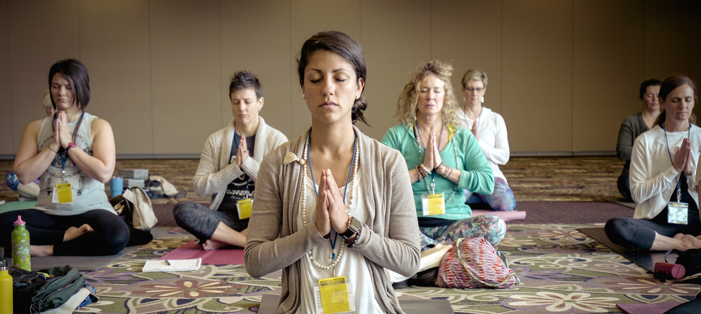
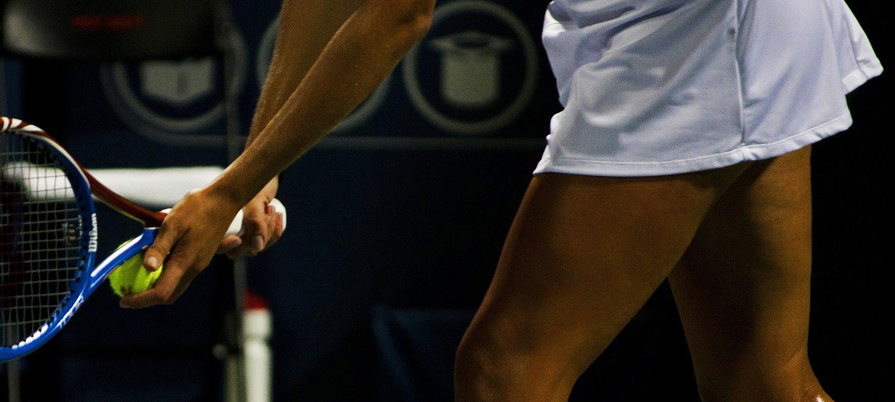

스포츠교실
- 
- 
-
- 올림픽 조각공원 내에서 즐기는 다양한 종목의 스포츠센터
- 88서울올림픽대회를 성공적으로 치러낸 6개의 체육관과 경기장, 그리고 세계적인 조각공원으로 유명한 ‘올림픽공원’ 내에 자리잡고 있는 ‘올림픽공원 스포츠센터’는, 국민 생활체육의 저변 확대를 위해서 수영장, 체조 경기장, 테니스 경기장을 다양한 종목의 스포츠센터로 개발하여 지역 주민들에게 제공함으로써 삶의 질을 향상시키는 데 크게 기여하고 있는 도시 속의 낙원, 생활 체육의 요람입니다.
- 공원스포츠센터의 특징으로는, 특수충격흡수를 할 수 있는 바닥마감재를 사용하여 회원들의 관절보호를 하는 등 세심한 부분까지 건강을 위해 노력하고 있습니다. 최고의 강사진으로 회원들에게 서비스하고 있으며 모든 회원들에게 사우나, 샤워장을 제공하고 있습니다.
더 많은 스포츠 보기
검도
“검도는 죽도를 이용하여 상대방을 가격함으로써 승부를 겨루는 투기 스포츠”(출처 : 스포츠 백과, 2008., 국민생활체육회)입니다. 경기는 단체전(5인조, 7인조)과 개인전으로 구분되는데, 죽도로 상대방의 유효격자 부위(머리, 손목, 허리, 목)을 정확하게 가격하면 득점으로 인정되며, 제한시간(5분 원칙) 내에 두 판을 먼저 이겨야 승리합니다.
골프
골프는 최대 45.93g의 작은 공을 클럽[골프채]로 쳐서 홀 안에 집어 넣는 스포츠로, 상대방보다 적은 타수로 공을 홀에 넣기만 하면 이기는 경기입니다. 얼핏 생각하기에 매우 단순해 보이지만, 골프는 경기 내내 예측할 수 없는 장애물에 봉착하게 된다는 점에서 흔히 인생에 비유됩니다. 소재와 모양, 용도가 다른 14개의 클럽과 18개의 홀, 날씨와 같은 자연환경, 그리고 저마다 갈고닦은 기량으로 무장한 상대 골퍼들, 이 모두를 이겨내야 승리의 기쁨을 맛볼 수 있습니다.
농구
농구는 달리기와 패스, 드리블, 점프, 슛 등의 몸동작 등을 통하여 “신체의 각 부분을 균형 있게 발달시킬 수 있는 동시에 심장과 폐의 단련에 효과적인 운동이며, 정확성과 판단력, 지구력, 민첩성, 과감성 등의 기능을 발달시키는 데 알맞은 단체 구기운동”(출처 : 스포츠 백과, 2008., 국민생활체육회)입니다. 특히 청소년기 성장발육 촉진 및 정서함양에 효과적이며, 단체생활을 통하여 사회성을 기르는 데에도 도움이 됩니다.
당구
당구는 지적 흥미를 유발하는 두뇌게임의 성격이 강하고 과격하지 않아, 남녀노소 누구나 즐길 수 있는 품위 있는 레저스포츠입니다. 올림픽공원스포츠센터는 성인 남성은 물론 여성이나 청소년들이 당구의 기본기를 체계적으로 익히며 당구를 즐길 수 있도록 체계적인 강습 프로그램을 운영하고 있습니다.